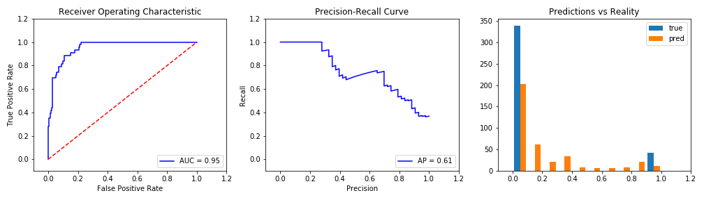

Up sampling Yeas. This will duplicate Yeas until Training is 50% Yeas. All Entries: 1904 Affirmitive examples: 263 (14%) Training: 2606 Affirmitive examples: 1303.0 (50.0%) Testing: 381 Affirmitive examples: 43.0 (11.0%)

0s: 0.89 True Positives: 32 Accuracy: 0.916010498687664 1s: 0.11 True Negatives: 317 AUC: 0.9537635888262006 False Positives: 21 F1 Score: 0.6666666666666666 False Negatives: 11 Recall (fract of actual yeas found): 0.7441860465116279 Precision (correctness of yeas predicted): 0.6037735849056604
Trianed on 2019-04-23_best-guess_binary.csv. Embedding = "word2vec". Model = "VotingClassifier(estimators=[('logistic', LogisticRegression(C=1000000000.0, class_weight='balanced', dual=False, fit_intercept=False, intercept_scaling=1, max_iter=100, multi_class='warn', n_jobs=None, penalty='l2', random_state=None, solver='warn', tol=0.0001, verbose=0, warm_start=Fa... verbose=0, warm_start=False)), ('GaussianNB', GaussianNB(priors=None, var_smoothing=1e-09))], flatten_transform=None, n_jobs=None, voting='soft', weights=[1, 1, 1, 1, 1])".